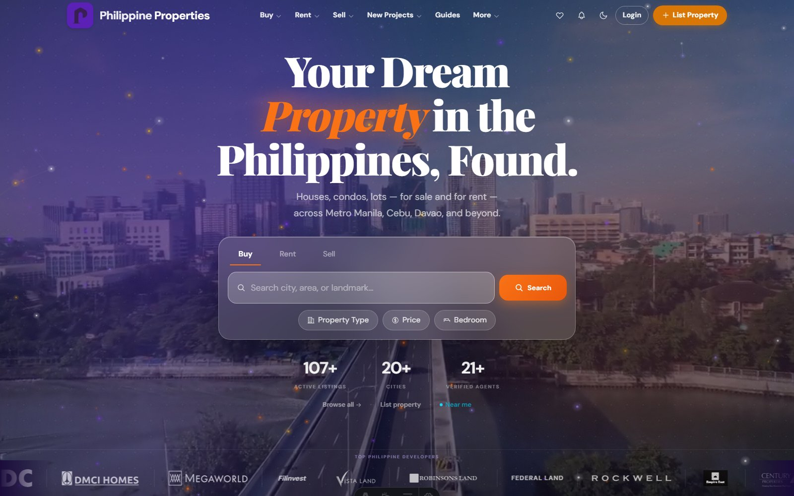

Feb 2026 – Present
PhilProp / IntegrityAI
Full-Stack Real Estate Listing Platform
- Built a Lamudi-style property marketplace for the Philippine market using Astro 6 with server-side rendering, deployed to Cloudflare Pages and backed by Supabase auth and PostgreSQL.
- Implemented role-based access for buyers, agents, and admins — including agent verification with private government-ID and PRC-license uploads stored in Cloudflare R2.
- Engineered the media pipeline on Cloudflare Images with responsive variants, plus row-level-security-aware API endpoints for privileged admin operations.
- Integrated GoHighLevel CRM so every property inquiry syncs to the correct agency sub-account, pipeline, and stage automatically.
- Wrote a schema-verification tool that validates every database query against a live schema snapshot before deploy, eliminating a recurring class of production outage.